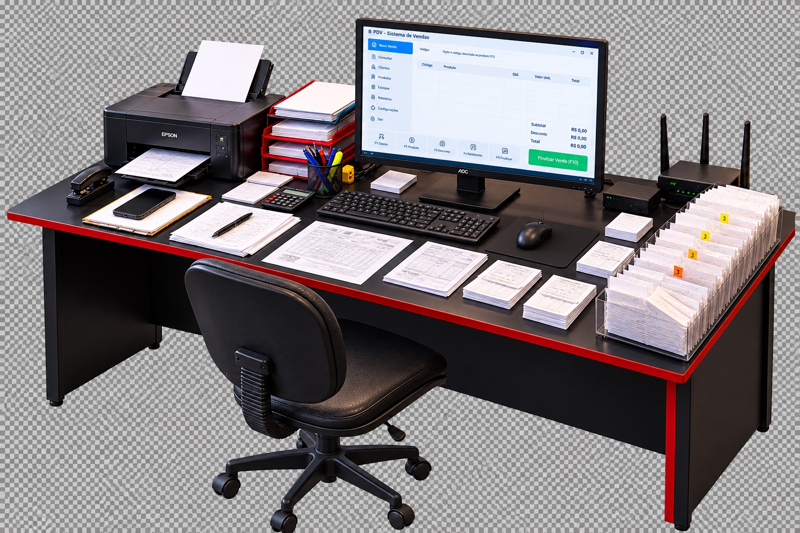

O DIA A DIA DO COMÉRCIO
A tecnologia precisa acompanhar seu negócio.
Uma única mesa. Uma história que todo comerciante conhece.
Teste 01 concluído: câmera e enquadramento
Este arquivo testa apenas a transição da mesa para o monitor e de volta, sem alterar a V11. Os próximos passos são separar a tela do monitor e os papéis em camadas, substituir a imagem JPEG por uma mesa-mestre com transparência verdadeira e implementar as nove cenas.
Observação: a imagem de referência original é JPEG e contém o quadriculado desenhado. Este teste não finge que ela já é um PNG transparente.